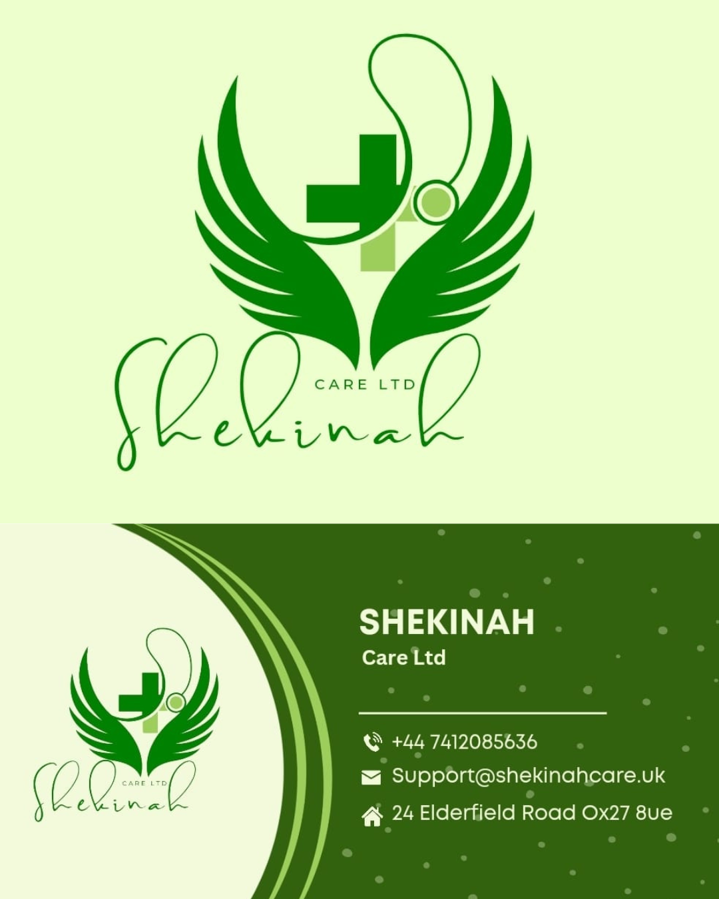
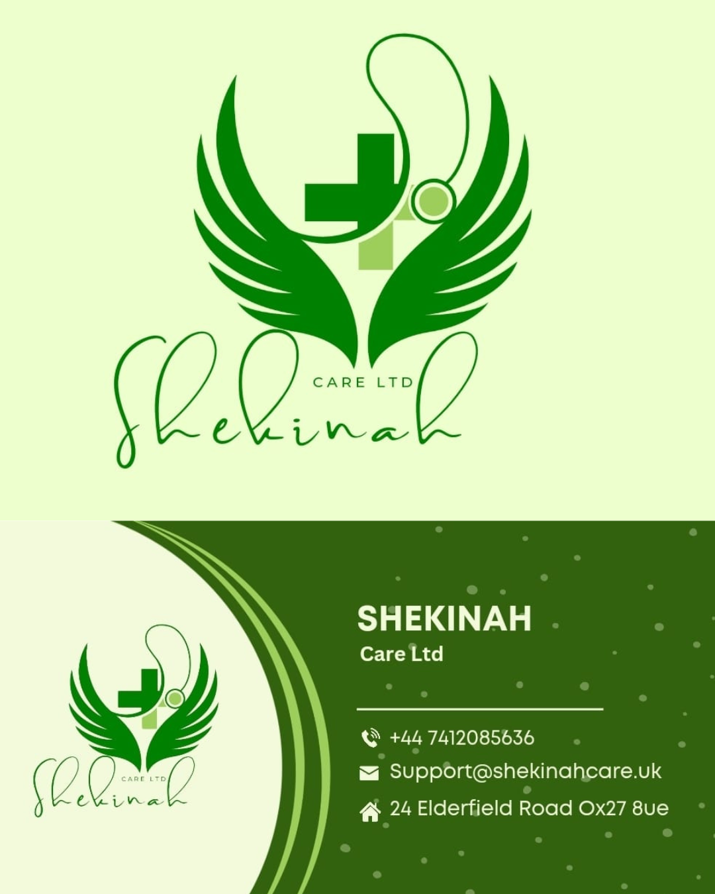

Led the end-to-end development and digital transformation of HOPE FOR THE HOPELESS GLOBAL OUTREACH UK by delivering a cohesive online presence to enhance accessibility, user engagement, and operational efficiency. This comprehensive project included the creation of a modern website, optimized social media channels, integrated payment gateways via Stripe, and a streamlined link in bio system.
 

As Project Manager and Scrum Master, I led a dynamic team to successfully design and launch a comprehensive branding and digital presence solution for Shekinah Care Ltd. This project encompassed creating a visually compelling company logo, developing an engaging and user-friendly website, and integrating brand identity across all digital platforms. The project significantly bolstered the client’s market presence and brand recognition, establishing a solid foundation for ongoing digital marketing efforts. The website continues to serve as a powerful tool for engaging with customers and showcasing the brand's values.
.png)
As the Community Manager for a dynamic online community, I utilized Agile project management and Scrum methodologies to design and execute engaging 5-day challenges that increased participation and strengthened member connections. Collaborating with a diverse team—including the community owner, lead generation specialists, virtual assistants, and external coaches—I ensured seamless planning and alignment with the community’s strategic objectives. My role emphasized fostering growth through meaningful interactions while delivering high-impact, well-coordinated events that resonated with the community’s core values.